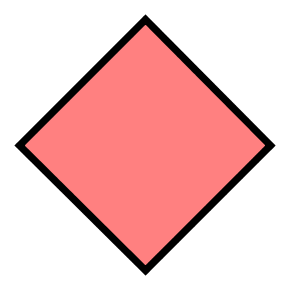

<!doctype html>
<html lang="en">
<head>
  <meta charset="utf-8">
  <meta name="author" content="Daniel J. Montanez">
    
  <title>HTML5 Canvas</title>

  <style>
    img {
      border: 1px solid black;
    }
  </style>

</head>

  <body>
     <canvas id="canvas"></canvas><br>
     <!--  -->
  </body>
    
  <script type="text/javascript">

    var options = {};
    options._iconHeight = 600;
    options._padding = 1 / 12 * options._iconHeight;
    
    var d = options._iconHeight;
    var p = options._padding;

    var rgba = "rgba(255,0,0,1)";
    canvas.width = 10; // options._iconHeight;
    canvas.height = 10; // options._iconHeight;
    var ctx = canvas.getContext("2d");

    var centerX = canvas.width / 2;
    var centerY = canvas.height / 2;
    var radius = 1;

    ctx.beginPath();
    ctx.arc(centerX, centerY, radius, 0, 2 * Math.PI, false);
    ctx.fillStyle = 'transparent';
    ctx.fill();
    ctx.lineWidth = 1;
    ctx.strokeStyle = 'transparent';
    ctx.stroke();

    /*
    ctx.strokeStyle = rgba;
    ctx.lineWidth = 15;
    ctx.fillStyle = rgba;
    // Build the speed leader arrow head
    ctx.moveTo(d / 2, p);
    ctx.lineTo(d / 2 + p, d / 2 / 2);
    ctx.lineTo(d / 2 - p, d / 2 / 2);
    ctx.lineTo(d / 2, p);
    ctx.fill();
    // Build the speed leader arrow line
    ctx.moveTo(d / 2, d / 2 / 2);
    ctx.lineTo(d / 2, d / 2 / 2 + (2 * p));
    ctx.stroke();
    // Build the speed leader dot
    ctx.beginPath();
    ctx.arc(d / 2, d / 2, p , 0, 2 * Math.PI);
    ctx.fill();
    // Build the speed leader base line
    ctx.moveTo(d / 2 - p, d - p);
    ctx.lineTo(d / 2 + p, d - p);
    ctx.stroke();
    */
  </script>

</html>